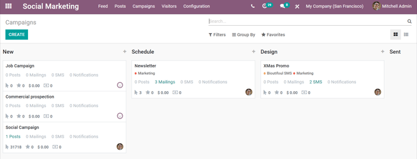

Campaigns page¶
To access a complete overview of all social marketing campaigns, open the application, and click from the header menu. Doing so reveals a separate page with every campaign in a default kanban view.
Each stage in the kanban view can be edited, by clicking the gear icon to the left of the + (plus sign) - located to the right of the stage title.
Note
The gear icon only appears when the cursor hovers to the left of the + (plus sign). When the gear icon is clicked, a drop-down menu reveals the options: Fold, Edit Stage, and Delete.

Clicking Fold minimizes that specific stage’s column. The stage column can be restored by clicking the folded version of it on the main Campaigns dashboard in the default kanban view.
Selecting Edit Stage reveals a pop-up window, in which the name and the sequence of the stage can be modified. If changes are made, be sure to click Save.
Clicking Delete removes the stage entirely.
Note
To add a new stage to the pipeline, side-scroll to the right on the Campaigns dashboard, click Add a Column, enter in the desired information, and click Add.
Tip
The same social marketing campaign information on the Campaigns dashboard can also be viewed as a list, by selecting the List option, located under the search bar, in the upper-right corner.
Add content and communications to campaigns¶
If the proper settings and applications are installed (as instructed above), there are four forms of communication/content options that can be added to campaigns. Each of these options are displayed as buttons in the upper-left corner of the campaign template page.
Send New Mailing: reveals a blank email template on a separate page, in which the message can be fully customized in a variety of ways.
Send SMS: reveals a blank SMS template on a separate page, in which a SMS communication can be created and configured.
Send Social Post: reveals a blank social post template on a separate page, in which a post can be created, and applied to social media accounts that are already connected to the database.
Push Notification: reveals a similar blank social post template on a separate page, however, the Push Notification options are already pre-selected in the Post on field.
Whichever form of communication is created, once it’s completed, Odoo returns to the Campaign Template page, showcasing that new content in its corresponding tab (e.g. Mailings, SMS, Social Media, and/or Push Notifications).
As content and communications are added to a campaign, tabs for those specific mediums appear, along with a variety of analytical smart buttons (e.g. Revenues, Quotations, Leads, etc.).
These smart buttons, located at the top of the template, display different metrics related to the campaign, and its various communications and content. Clicking any smart button reveals a separate page dedicated to that particular element of the campaign, allowing for quicker, more organized analysis.
Note
The Odoo Social Marketing app is integrated with other Odoo applications, such as Sales, Invoicing, CRM, and Website.
See also
Social marketing campaigns¶
Social marketing campaigns help companies connect directly with the marketplace. These campaigns are helpful when introducing a new product to customers, explaining the value of a product or service, or when advertising an upcoming event or product release.
The most effective social marketing campaigns typically involve multiple channels to maximize content distribution, and Odoo’s Social Marketing application acts as a singular control center to monitor, plan, post, track, and analyze all of the various content and content channels within a single dashboard.